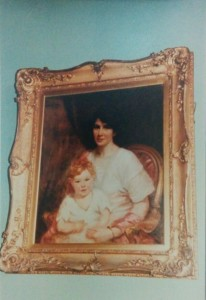

בריאות מחוצפת
סדרה בת שבעה ספרים, המהווה לקט מתוך הכתבים של משפחת תומסון, מחלוצי הריפוי הטבעי, מאדינבורו סקוטלנד. תרגמה וערכה: נחמה כנעני.
הסדרה מיועדת לכל ההולכים בדרך הריפוי הטבעי על-פי שיטת קינגסטון ולמי שמחפש דרך אלטרנטיבית, הוליסטית, רבת ניסיון והצלחות לטיפול בבעיות בריאות, גם כאלה הנחשבות ברפואה הקונוונציונלית כ"חשוכות מרפא".
היתה לי הזכות הגדולה להתרפא תוך כדי שהייה ממושכת בקינגסטון קליניק בחודשי הקיץ משנת 1984 ואילך.
{kind=link}
בהיותי שם נפגשתי עם המון אנשים, מכל רחבי העולם, שבאו כמוני לקינגסטון כדי לקבל לידיהם את המושכות של חייהם.
זכיתי להיות בטיפולו הישיר והמסור של מר ס. לסלי תומסון, הנטורופת הסקוטי, בעל שאר הרוח, וגם לקבל ממנו את הרשות לתרגם את החומר הכתוב, רב הערך, שכתבו הוא ובני משפחתו במשך כשישים שנה.
המאמרים מפרטים ומסבירים את השיטה הנקראת "שיטת קינגסטון".
תרגמתי את המאמרים לעברית וערכתי אותם. הוספתי דברים משל עצמי והוצאתי לאור סדרה בת שבעה ספרים שקראתי לה "בריאות מחוצפת" כתרגום ל- Rude Health במקור האנגלי. ספר אחד מתוך הסדרה אינו תרגום, הוא עוסק במשנתו הרפואית של הרמב"ם בהשוואה לשיטת קינגסטון שכתבתי אני.
הסדרה עוסקת בין היתר בתזונה מרפאת, בריאות טבעית, רפואה ללא תרופות ותזונה כבסיס לבריאות.
רשימת המאמרים שתורגמו לעברית מוגשת לפניכם, וכן תצלום מכתב ששלח אלי מר ס. לסלי תומסון.
כדי לרכוש את הספרים ניתן להתקשר לנחמה כנעני בטלפון או לכתוב לכתובת הרשומה מטה.
לרוכשי הספרים תינתן הדרכה חינם.